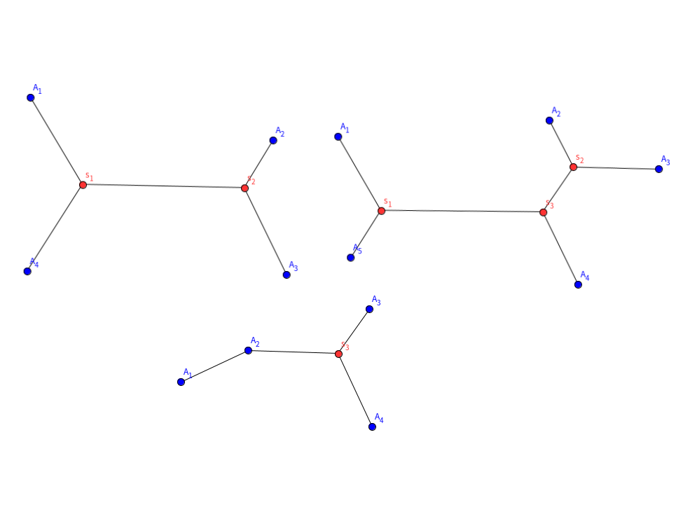

斯坦纳树学习笔记
本文最后更新于：2021年8月11日 凌晨
斯坦纳树——从费马点开始
引入
相信大家在日常学习生活中都遇到过这个问题：求三角形的费马点。相信大家对此并不陌生，结论也显而易见。可若将它推广开来，求平面内一点，使其到给定的n个点的距离和最小，那么还有开箱即用的结论吗？这就是我们今天要探讨的问题：斯坦纳树了
推广
有了三个点的情况，我们自然而然地便会将问题推广至n个点：
形式化描述：
给定点 ,求一点P,使得 最小
这个推广看起来很好，但库朗（R.Courant）和罗宾斯（H.Robbins）提出第一个定义的推广是肤浅的[1],因此，在OI中，我们要研究的问题就变为了：给定 $n$ 个点 $A_1,A_2,\ldots,A_n$ ,试求连接这 $n$ 个点的最短线段总和。
初看是不是特别像最小生成树？但请注意，在斯坦纳网络中，两个关键点之间并不一定要直接相连。如图：

可以看到，每张图中都会有一些红色的中转点。但在一些情况下，也可能会退化为蓝点。
就像费马点一样，大多数时候，我们都需要找中转点。
在图论中，点的位置被进一步确定，因此问题被进一步转化为：给定 $n$ 个节点，其中有 $k$ 个关键点，求一个子图使所有关键点联通且边权最小。
其实这有点像最小生成树的Prim算法，不过S，T两个点集转移时只在点集中添加关键点
例题
知道了这些后，我们便可开始写代码了。解决这类组合最优化问题，我们可以使用状压dp的思想，记 $f(i,S)$ 为当前子树根为 $i$ 时,子树内关键点联通的最小代价。
为什么是“树”呢？我们可以反证：若有环，则删去后总边权值】必定减小，因此一定更优，所以最后形成的图一定是树
P6192 【模板】最小斯坦纳树(边权)
这道题有两个要点：一是子集的枚举，二是状态的转移；
观察dp式子：
对于 $i$ 的度数为 $1$ 的情况，可以考虑枚举树上与 $i$ 相邻的点 $j$，则：
对于 $i$ 的度数大于 $1$ 的情况，可以划分成几个子树考虑，即：
其中，对于第二个式子，由于满足三角形不等式，因此可以使用dijkstra优化
修复长城(点权)
本题只需在建边时将点权转化为边权后，便可采用同样的思路通过这道题
参考
本博客所有文章除特别声明外，均采用 CC BY-SA 4.0 协议 ，转载请注明出处！